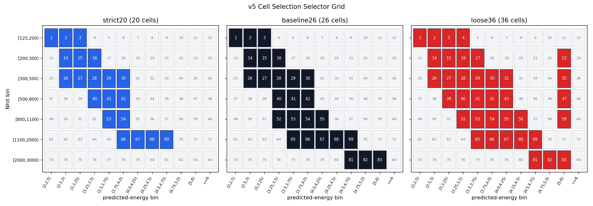
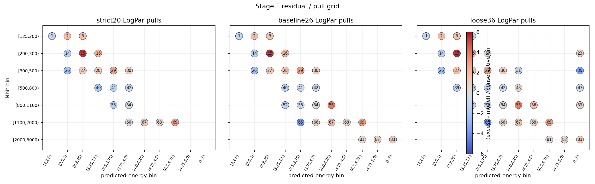
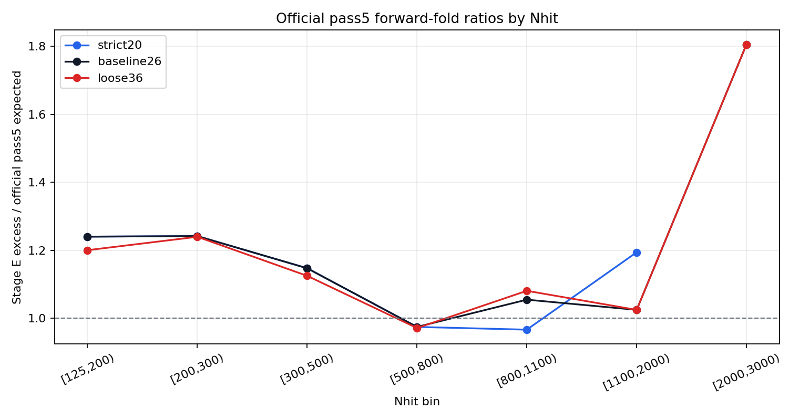
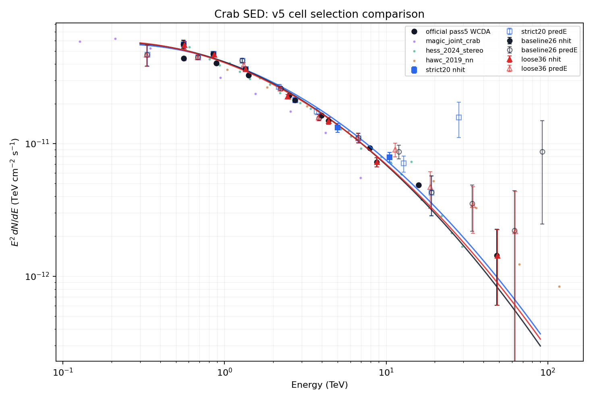

Crab SED v5 Cell Selection Comparison
This report holds the v4 physics contract fixed: aperture-conditioned Stage A response, Stage E annulus-normalized containment=1 signal, and identical Stage F/G fitting logic. Only the fit-cell selector changes. baseline26 is the nominal reference; strict20 and loose36 are selector-sensitivity brackets.
Selector Definitions
| selector | role | cells | included cell ids |
|---|---|---|---|
| strict20 | conservative quality bracket | 20 | 1,2,3,14,15,16,26,27,28,29,30,40,41,42,53,54,66,67,68,69 |
| baseline26 | nominal reference, current v4 baseline | 26 | 1,2,3,14,15,16,26,27,28,29,30,40,41,42,52,53,54,55,65,66,67,68,69,81,82,83 |
| loose36 | stress test / systematic bracket | 36 | 1,2,3,4,14,15,16,17,23,26,27,28,29,30,31,35,39,40,41,42,43,47,52,53,54,55,56,59,65,66,67,68,69,81,82,83 |

Main Comparison
| selector | cells | LogPar phi0 | alpha | beta | chi2/ndof | max abs pull | total obs/pass5 | [125,200) obs/pass5 |
|---|---|---|---|---|---|---|---|---|
| strict20 | 20 | 2.44841e-12 | 2.7261 | 0.14051 | 4.717 | 5.479 | 1.184 | 1.24 |
| baseline26 (nominal) | 26 | 2.36784e-12 | 2.7615 | 0.14536 | 5.1 | 5.538 | 1.181 | 1.24 |
| loose36 | 36 | 2.34145e-12 | 2.7518 | 0.13694 | 4.209 | 5.649 | 1.158 | 1.2 |
Stage F Fits
| selector | cells | LogPar phi0 | alpha | beta | chi2 / ndof | chi2/ndof | max abs pull | PL phi0 | PL gamma |
|---|---|---|---|---|---|---|---|---|---|
| strict20 | 20 | 2.44841e-12 | 2.7261 | 0.14051 | 80.19 / 17 | 4.717 | 5.479 | 2.20891e-12 | 2.5997 |
| baseline26 | 26 | 2.36784e-12 | 2.7615 | 0.14536 | 117.3 / 23 | 5.1 | 5.538 | 2.12073e-12 | 2.632 |
| loose36 | 36 | 2.34145e-12 | 2.7518 | 0.13694 | 138.9 / 33 | 4.209 | 5.649 | 2.11018e-12 | 2.6366 |

Official Pass5 Forward Fold
The official pass5 spectrum is folded through the aperture-conditioned v4 Stage A response and Stage E containment=1 exposure, then summed over each selector. The total, Nhit, and cell-level tables are written to assets/v5-cell-selection/official_pass5_forward_fold_summary.csv, assets/v5-cell-selection/official_pass5_forward_fold_nhit_summary.csv, and assets/v5-cell-selection/official_pass5_forward_fold_cell_counts.csv.
| Nhit | strict20 obs/pass5 | strict20 excess | strict20 pass5 | baseline26 obs/pass5 | baseline26 excess | baseline26 pass5 | loose36 obs/pass5 | loose36 excess | loose36 pass5 |
|---|---|---|---|---|---|---|---|---|---|
| [125,200) | 1.24 | 5431.3 | 4379.2 | 1.24 | 5431.3 | 4379.2 | 1.2 | 5443 | 4534.2 |
| [200,300) | 1.242 | 4073.9 | 3280.4 | 1.242 | 4073.9 | 3280.4 | 1.24 | 4187.7 | 3377.7 |
| [300,500) | 1.147 | 3585.2 | 3124.8 | 1.147 | 3585.2 | 3124.8 | 1.125 | 3549.1 | 3154.8 |

Stage G SED Overlay

Systematic Shifts
| selector | flux normalization shift | alpha shift | beta shift | total obs/pass5 shift | low-Nhit obs/pass5 shifts |
|---|---|---|---|---|---|
| strict20 | 0.034027 | -0.035444 | -0.0048483 | 0.0022758 | [125,200): 0 [200,300): 0 [300,500): 0 |
| loose36 | -0.011143 | -0.0096765 | -0.0084236 | -0.019206 | [125,200): -0.03211 [200,300): -0.00166 [300,500): -0.01948 |
Stage G Metadata Check
| selector | Stage F run id in Stage G | Stage F metadata path matches | required cells |
|---|---|---|---|
| strict20 | v5_cellsel_strict20 | yes | 20 |
| baseline26 | v5_cellsel_baseline26 | yes | 26 |
| loose36 | v5_cellsel_loose36 | yes | 36 |
Artifacts
Stage F outputs live under apply/output/stage_f_v5_cell_selection/runs/v5_cellsel_*. Stage G outputs live under apply/output/stage_g_v5_cell_selection/runs/v5_cellsel_*. This report summary JSON is assets/v5-cell-selection/v5_cell_selection_comparison_summary.json.